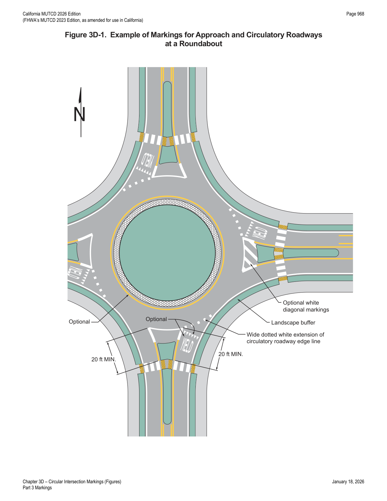
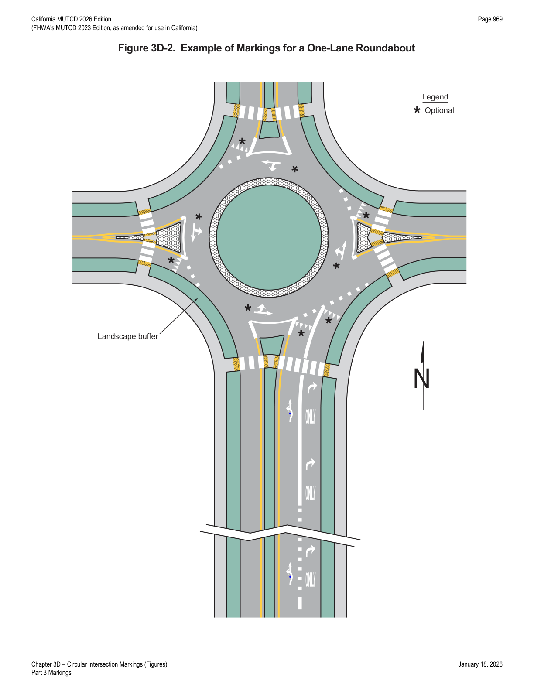
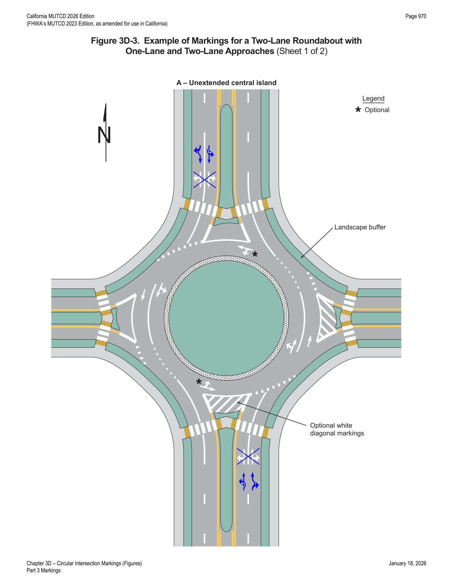
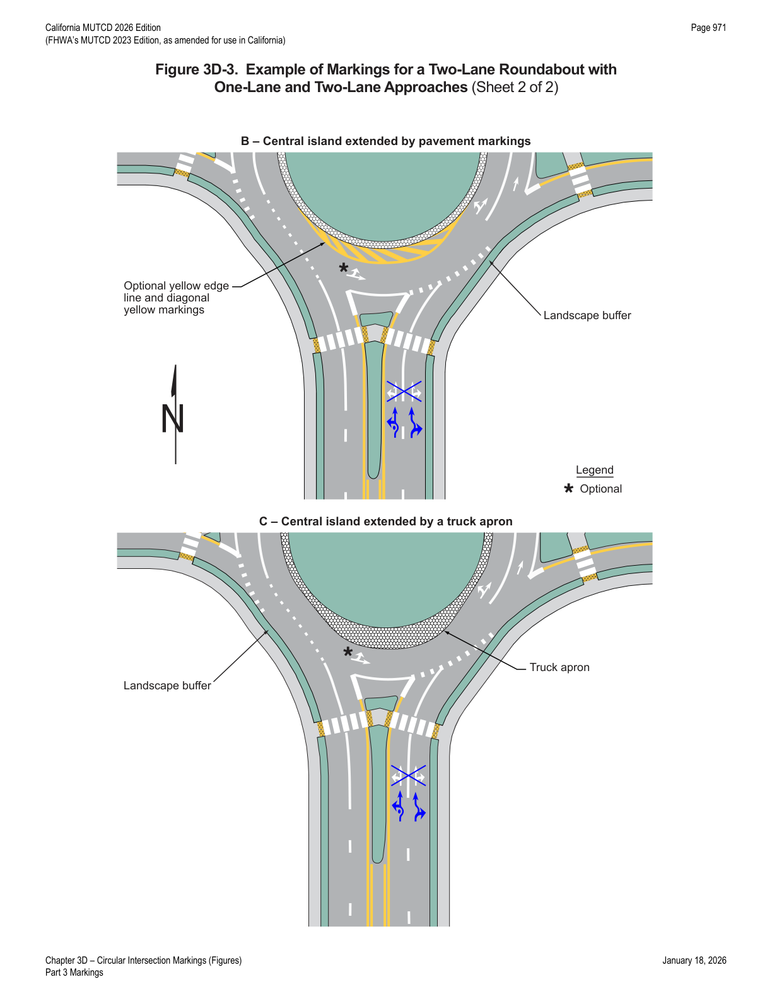
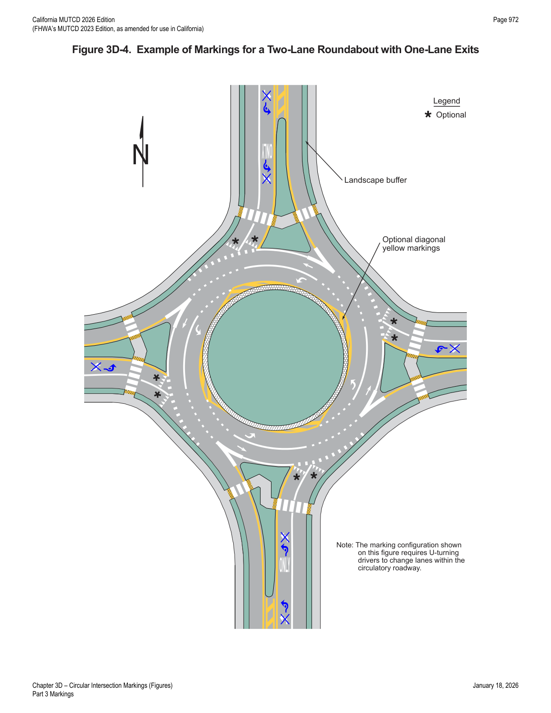
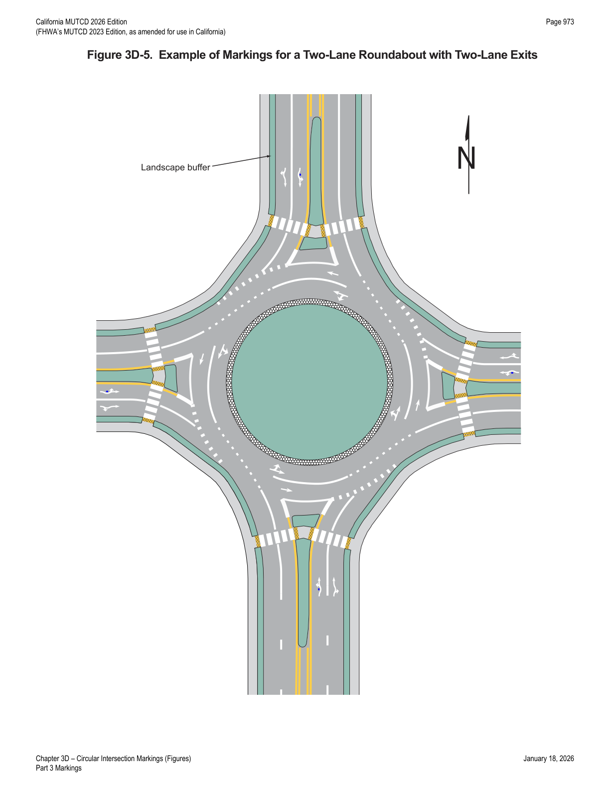
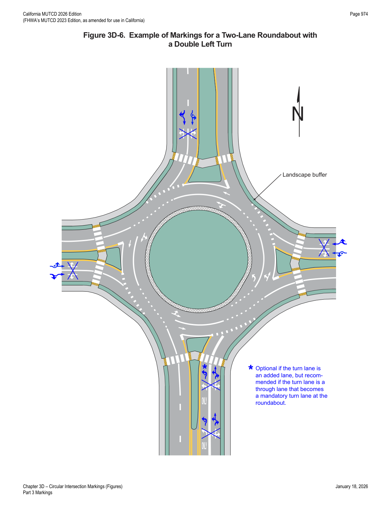
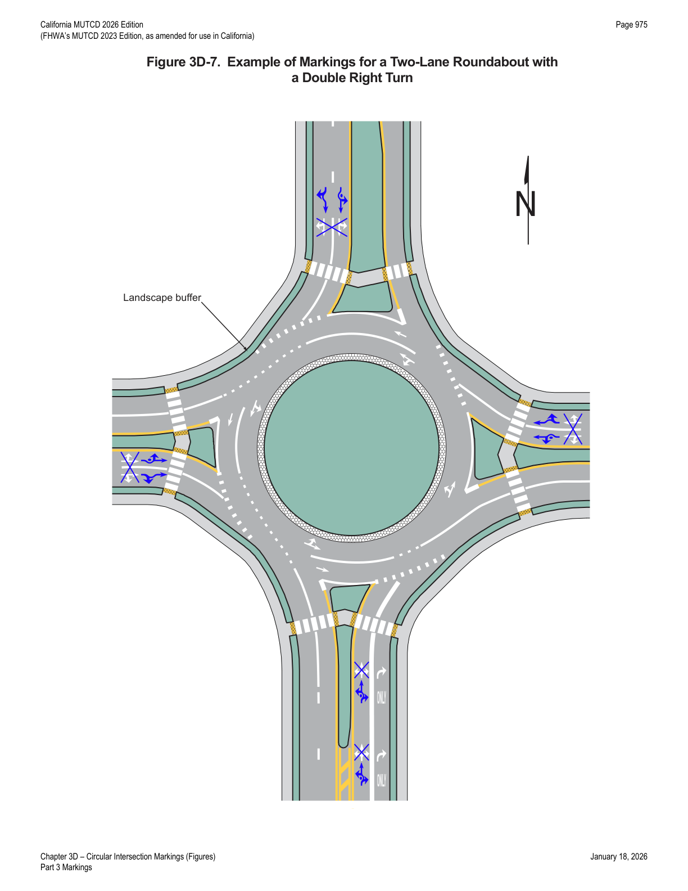
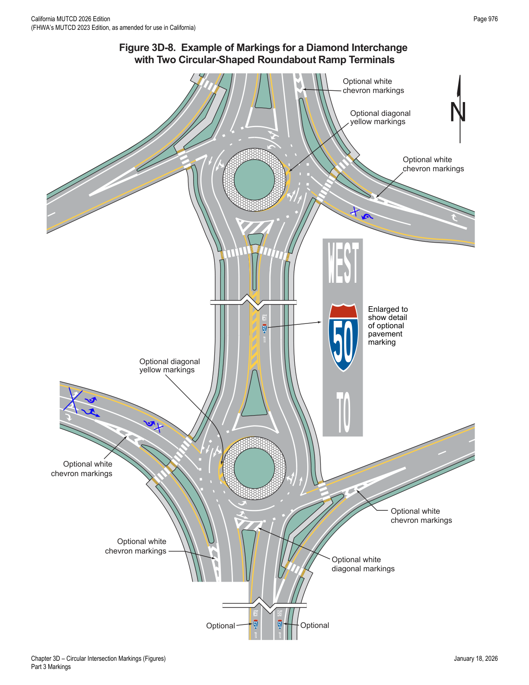

Part 3 · Markings · Chapter 3D
Circular Intersection Markings
Pavement marking design for roundabouts, traffic circles, and rotaries — lane lines, edge lines, yield lines, word/symbol markings, and lane-use arrows on approaches to and within the circulatory roadway.
3D.01General
- 01Pavement markings and signing for a circular intersection should be integrally designed to correspond to the geometric design and intended lane use of a circular intersection.
- 02Markings on the approaches to a circular intersection and on the circulatory roadway should be compatible with each other to provide a consistent message to road users. The markings should supplement the signing, both conveying the optional and mandatory movements such that road users will know to choose the proper lane in the approach to the circular intersection and remain in that lane throughout departure from the circulatory roadway.
- 03Common circular intersection types include roundabouts, rotaries, and traffic circles (see definitions in Section 1C.02). Traffic circles and rotaries are often much larger than roundabouts. Modern roundabouts feature channelized, curved approaches that reduce vehicle speed. Traffic calming circles are smaller and are typically used on urban or suburban neighborhood streets.
- 04Figure 3D-1 provides an example of the pavement markings for approach and circulatory roadways at a roundabout. Figure 3B-21(CA) shows the options that are available for lane-use pavement marking arrows on approaches to roundabouts. Figures 3D-2 through 3D-8 illustrate examples of markings for roundabouts of various geometric and lane-use configurations.
- 05Actuated LED pedestrian warning signs (see Section 2A.12), traffic control signals, pedestrian hybrid beacons, and rectangular rapid flashing beacons (see Part 4) are sometimes used at roundabouts to facilitate the crossing of pedestrians or to meter traffic.
- 06Section 8A.12 provides information about circular intersections that contain or are in close proximity to grade crossings.
- 07Section 9E.05 contains information regarding bicycle lane markings at circular intersections.
- 08Section 3C.09 contains information regarding crosswalks at circular intersections.

In practice: Figure 3D-1 is the reference layout most engineers redline first — it shows the 20 ft minimum crosswalk setback, the wide dotted edge-line extension across the entry, and the optional diagonal markings that later sections detail individually.
3D.02White Lane Line Pavement Markings for Roundabouts
- 01Multi-lane approaches to roundabouts shall have lane lines.
- 02A through lane on a roadway that becomes a dropped lane (mandatory left-turn or right-turn lane) at a roundabout shall be marked with a dotted white lane line in accordance with Section 3B.07. Refer to Detail 37D as shown in Figure 3A-111(CA).
- 03Multi-lane roundabouts should have lane line markings within the circulatory roadway to continuously channelize traffic in the circulatory roadway and through the departure movement.
- 04Continuous concentric lane lines shall not be used within the circulatory roadway of a roundabout.
- 05Channelizing lines (see Section 3B.08) and chevron and diagonal markings (see Section 3B.25) may be used on the approaches to and within the circulatory roadway of multi-lane roundabouts to separate traffic lanes, discourage lane changing, and/or compensate for off-tracking of larger trucks and vehicles.
- 06Reducing the spacing between lines of a broken lane line allows better delineation of the lower-radius curves typically found in circular intersections.
3D.03Edge Line Pavement Markings for Roundabout Circulatory Roadways
- 01A white edge line should be used on the outer (right-hand) edge of the circulatory roadway.
- 02Where a white edge line is used for the circulatory roadway, it should be as follows (see Figure 3D-1): (A) a solid line adjacent to the splitter island, and (B) a wide dotted line across the lane(s) entering the roundabout.
- 03Edge lines and edge line extensions shall not be placed across the exits from the circulatory roadway at roundabouts.
3D.04Yield Lines for Roundabouts
- 01Section 2B.18 contains information regarding the TO ALL LANES (R1-2cP) plaque that can be used beneath the YIELD sign.

3D.05Word and Symbol Pavement Markings for Roundabouts
- 01YIELD (word) (see Figure 3D-1) and YIELD AHEAD (symbol or word) pavement markings may be used on approaches to roundabouts.
- 02Word and/or route shield pavement markings may be used on an approach to or within the circulatory roadway of a roundabout to provide route and/or destination guidance information to road users (see Figure 3D-8).


3D.06Arrow Pavement Markings for Roundabouts
- 01Lane-use arrow pavement markings should not be used on single-lane approaches to circular intersections.
- 02Lane-use arrows should be used on approaches to circular intersections with double left or double right turns.
- 03Lane-use arrow pavement markings shall not be provided between a crosswalk and a wide dotted line across the lane(s) entering the circular roadway.
- 06If lane-use arrows are used on the approaches to a roundabout, the style used should match the style of the lane-use arrows (normal or curved-stem) used on the regulatory lane-use signs on the approach.
- 07If lane-use arrow pavement markings are used within the circulatory roadway of multi-lane roundabouts, normal lane-use arrows (see Section 3B.23 and Figure 3B-21) should be used.
- 08Details and sizes of the standard and curved-stem arrows that can be used for circular intersections are contained in the "Standard Highway Signs" publication (see Section 1A.05).




3D.07Markings for Other Circular Intersections
- 01The markings shown in this Chapter may be used at other circular intersections if engineering judgment indicates that their presence will benefit drivers, pedestrians, or other road users. Figure 2B-21 provides an example of markings at a mini-roundabout.

In practice: this diamond-interchange application (Figure 3D-8) is the layout to pull up when a project pairs two roundabout ramp terminals — the chevron and diagonal markings shown are all optional embellishments layered onto the base lane-line and edge-line rules from Sections 3D.02 and 3D.03.
★ Key Takeaways — Chapter 3D
- Multi-lane approaches to roundabouts shall have lane lines; a through lane that becomes a dropped (mandatory turn) lane at a roundabout shall use a dotted white lane line (Detail 37D). Continuous concentric lane lines within the circulatory roadway are prohibited.
- A white edge line should mark the outer edge of the circulatory roadway — solid adjacent to the splitter island, wide dotted across entering lanes — but edge lines and their extensions shall never be placed across exits from the circulatory roadway.
- An optional yellow edge line may outline the inner (left-hand) edge of the circulatory roadway to help channelize traffic.
- Yield lines, YIELD (word), and YIELD AHEAD markings are all optional (not mandatory) devices for roundabout entries.
- Lane-use arrows should not be used on single-lane approaches but should be used where double left or double right turns exist; arrows are prohibited between a crosswalk and the wide dotted entry line. Arrow style (normal vs. curved-stem) should match the regulatory lane-use signs on the approach, and normal arrows should be used within multi-lane circulatory roadways.
- Crosswalks are not shown crossing to the central island (per Section 3C.09) and should be set back a minimum of 20 ft from the circulatory roadway edge, as illustrated in Figure 3D-1.
- The same marking toolkit may be applied at other circular intersections (traffic circles, rotaries, mini-roundabouts, and diamond interchange roundabout ramp terminals) wherever engineering judgment supports it.